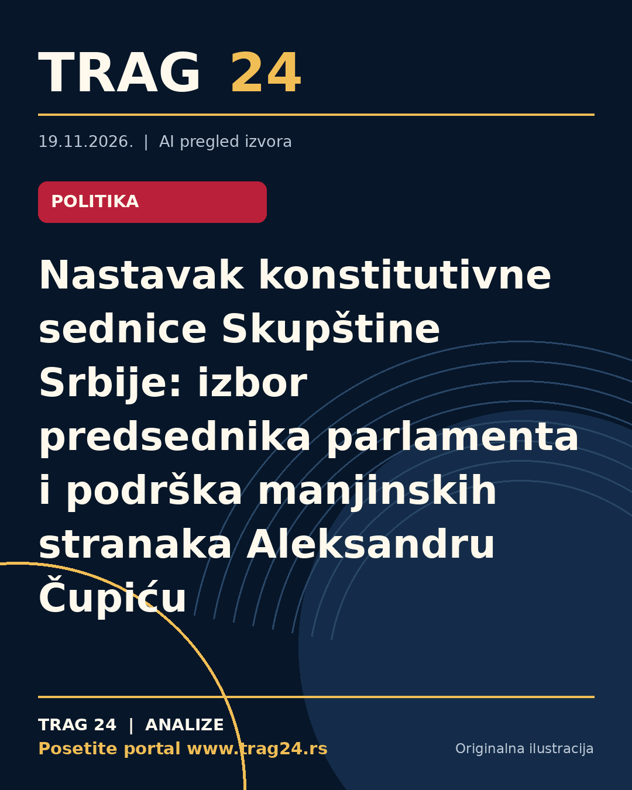

Nastavak konstitutivne sednice Skupštine Srbije: izbor predsednika parlamenta i podrška manjinskih stranaka Aleksandru Čupiću

ŠTA SE DOGODILO
Konstitutivna sednica Narodne skupštine Srbije, novog, 15. saziva, nastavljena je trećeg dana raspravom o izboru predsednika parlamenta. Za ovu funkciju predloženi su Aleksandar Čupić iz poslaničke grupe "Studentska lista" i Stojan Radenović iz poslaničke grupe "Aleksandar Vučić – Srbija pobeđuje". Osim izbora predsednika parlamenta, na dnevnom redu su bili i izbor potpredsednika, imenovanje generalnog sekretara, određivanje članova radnih tela i parlamentarne delegacije u međunarodnim institucijama.
HRONOLOGIJA
Konstitutivna sednica počela je u utorak, kada su potvrđeni mandati svih 250 poslanika, čime je zvanično konstituisan novi saziv Skupštine. Dve poslaničke grupe, "Studentska lista" i "Aleksandar Vučić – Srbija pobeđuje", formirane su odmah po konstituisanju. Drugi dan sednice uglavnom je protekao u polemici i međusobnim optužbama tokom rasprave o kandidatima za predsednika, dok je nastavak sednice trećeg dana započet od 10 časova. Sednica je tog dana završena oko 18 časova, sa najavom nastavka narednog jutra.
ŠTA NAVODE IZVORI
Izvor "Novosti" prenosi da je tokom rasprave bilo i oštrih reči i polemika, uključujući osporavanje Čupićevog akademskog zvanja od strane opozicije, dok su poslanici Studentske liste i predstavnici manjinskih stranaka podržavali njegov izbor. "Nova.rs" ističe da su predstavnici Saveza vojvođanskih Mađara i Stranke pravde i pomirenja takođe najavili podršku Čupiću, kao i da je Vučić optuživao protivkandidata. Izvor "N1" navodi da je Sandžačka demokratska partija nakon završetka sednice zvanično izrazila podršku kandidatu Aleksandru Čupiću i time zaokružila podršku manjinskih stranaka za njegov izbor, ističući poštovanje demokratskih principa.
ŠTA JE POTVRĐENO
Potvrđeno je da su kandidat za predsednika skupštine sa Studentske liste Aleksandar Čupić i kandidat sa liste "Aleksandar Vučić – Srbija pobeđuje" Stojan Radenović. Konstitutivna sednica je u toku, sa najavljenim nastavkom glasanja i ostalih procedura u narednim danima. Konstatuje se i to da je u Skupštini ukupno 250 poslanika, a da rok za formiranje nove Vlade počinje da teče od dana konstituisanja parlamenta.
ŠTA NIJE POTVRĐENO
Do sada dostupni izvori ne potvrđuju završni ishod glasanja za predsednika Skupštine, niti da li će Aleksandar Čupić ili Stojan Radenović biti izabrani za tu funkciju. Takođe nema potvrde o eventualnim konkretnim koalicijama ili dogovorima, osim naznačene podrške manjinskih stranaka Aleksandru Čupiću.
ŠTA OSTАJE OTVORENO: Ostaje da se vidi konačan rezultat glasanja za predsednika Skupštine i dalji razvoj radnog programa konstitutivne sednice, kao i sastav i funkcionisanje nove Vlade koji se treba formirati u roku od 90 dana. Takođe je otvoreno pitanje da li će dalje političke tenzije ili saradnja između poslaničkih grupa uticati na funkcionisanje parlamenta.
Izvori
- https://www.novosti.rs/vesti/politika/1672599/danas-nastavak-konstitutivne-sednice-rasprava-kandidatima-predsednika-skupstine
- https://nova.rs/vesti/politika/treci-dan-konstitutivne-sednice-skupstine-na-dnevnom-redu-izbor-predsednika-parlamenta/
- https://n1info.rs/vesti/podrska-sandzacke-demokratske-partije-cupicu-stigla-posle-zavrsetka-sednice-skupstine/
Ova analiza je pripremljena uz pomoć veštačke inteligencije na osnovu javno dostupnih izvora. Navodi izvora nisu nužno nezavisno potvrđeni.